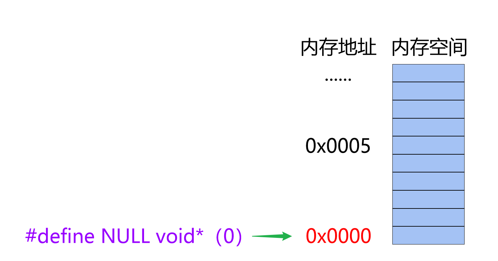
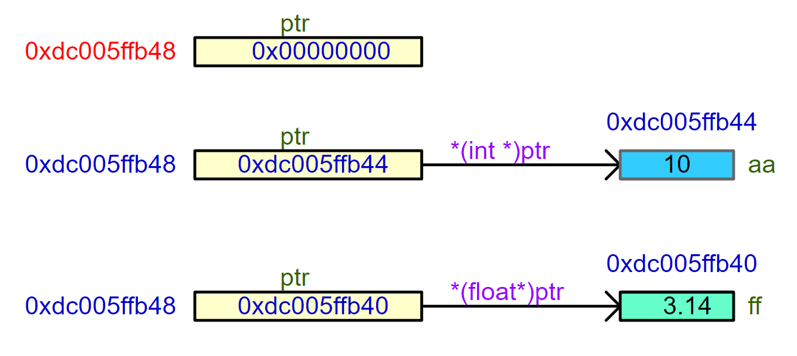

<!DOCTYPE lake>
<h1 data-lake-id="EN8f3" id="EN8f3"><span data-lake-id="u4fdc7ba3" id="u4fdc7ba3">1&gt; 不同类型指针</span></h1><span class="yuque-card-unsupported">[codeblock]</span><p data-lake-id="u598d95a1" id="u598d95a1"><span data-lake-id="u95d63181" id="u95d63181">还有数组指针，函数指针等等</span></p><p data-lake-id="ucd5efbac" id="ucd5efbac"><br/></p><span class="yuque-card-unsupported">[codeblock]</span><p data-lake-id="u5701fadc" id="u5701fadc"><br/></p><hr/><h1 data-lake-id="cCgrv" id="cCgrv"><span data-lake-id="uf82c83c3" id="uf82c83c3">2&gt; 野指针</span></h1><p data-lake-id="u156841f0" id="u156841f0"><span data-lake-id="u3c1fc2d6" id="u3c1fc2d6">野指针：指针变量保存的地址是非法的;</span></p><span class="yuque-card-unsupported">[codeblock]</span><p data-lake-id="u45c9db5b" id="u45c9db5b"></p><p data-lake-id="uf591dce6" id="uf591dce6"><span data-lake-id="ua9edbc15" id="ua9edbc15">如何</span><strong><span class="lake-fontsize-12" data-lake-id="u2df68a7b" id="u2df68a7b" style="color: #DF2A3F">避免</span></strong><span data-lake-id="u02fff2bd" id="u02fff2bd">野指针：</span></p><p data-lake-id="u0464f632" id="u0464f632"><span data-lake-id="u657779db" id="u657779db">1》定义指针变量时，初始化为NULL；</span></p><p data-lake-id="ubdf6a426" id="ubdf6a426"><span data-lake-id="u269d6b37" id="u269d6b37">2》动态内存中，free()后，将指针变量赋值为NULL；</span></p><hr/><h1 data-lake-id="wcHFG" id="wcHFG"><span data-lake-id="u0724cd19" id="u0724cd19">3&gt; 空指针 （NULL）</span></h1><span class="yuque-card-unsupported">[codeblock]</span><p data-lake-id="u2184d150" id="u2184d150" style="text-indent: 2em"><span data-lake-id="u5c181e50" id="u5c181e50">定义指针变量时，不初始化，就会出现野指针，操作过程中，可能导致程序崩溃，或访问到其他地方，出现奇怪的bug；</span></p><p data-lake-id="uc1d1872a" id="uc1d1872a" style="text-indent: 2em"><span data-lake-id="u4cb2e9fa" id="u4cb2e9fa">定义指针变量时，初始化为空指针，如果不进行赋值，直接访问肯定会出错，方便程序员找到错误，所以定义指针变量时通常初始化为空指针；</span></p><p data-lake-id="u2ad01743" id="u2ad01743" style="text-indent: 2em"><span data-lake-id="u458b2268" id="u458b2268">​</span><br/></p><span class="yuque-card-unsupported">[codeblock]</span><p data-lake-id="u11b77fea" id="u11b77fea"><br/></p><p data-lake-id="udfe98e6f" id="udfe98e6f"><span data-lake-id="uf4bcb05b" id="uf4bcb05b">NULL的本质：内存空间的0x0000地址；</span></p><span class="yuque-card-unsupported">[codeblock]</span><p data-lake-id="u613aad8d" id="u613aad8d"><br/></p><p data-lake-id="ufaf28cd5" id="ufaf28cd5"></p><hr/><h1 data-lake-id="mDZAd" id="mDZAd"><span data-lake-id="u7881168c" id="u7881168c">4&gt; 万能指针（void *）</span></h1><p data-lake-id="u5767649d" id="u5767649d"><code data-lake-id="ua84d7196" id="ua84d7196"><span class="lake-fontsize-11" data-lake-id="u4a2b309b" id="u4a2b309b" style="color: var(--color-text-primary)">void *</span></code><span class="lake-fontsize-12" data-lake-id="ub0b4753e" id="ub0b4753e" style="color: rgba(0, 0, 0, 0.85)">万能指针或通用指针，本质上它是一个可以指向任何数据类型的指针；</span></p><p data-lake-id="u8bd720e4" id="u8bd720e4"><span class="lake-fontsize-12" data-lake-id="u328d50f6" id="u328d50f6" style="color: #DF2A3F">注意</span><span class="lake-fontsize-12" data-lake-id="u09833a37" id="u09833a37" style="color: rgba(0, 0, 0, 0.85)">，不能直接对</span><code data-lake-id="u0c2c0f18" id="u0c2c0f18"><span class="lake-fontsize-12" data-lake-id="u3ba329ca" id="u3ba329ca" style="color: rgba(0, 0, 0, 0.85)">void *</span></code><span class="lake-fontsize-12" data-lake-id="u5c182ef6" id="u5c182ef6" style="color: rgba(0, 0, 0, 0.85)">指针解引用；</span></p><span class="yuque-card-unsupported">[codeblock]</span><p data-lake-id="u8b18d75d" id="u8b18d75d"><br/></p><p data-lake-id="ueeafd6a4" id="ueeafd6a4"></p>